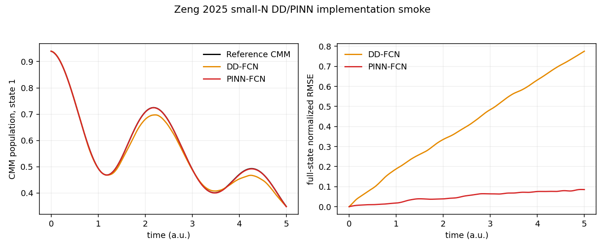

Mapping Dynamics
Learning the Generator: PINN-MMST Dynamics
A trajectory contains many correlated coordinates, momenta, mapping variables, and observables, but they are all generated by one Hamiltonian. This suggests a useful hierarchy for machine learning: learn the potential or Hamiltonian that generates the dynamics instead of fitting every downstream variable independently. The idea connects machine-learned potential energy surfaces, physics-informed neural networks, and MMST mapping dynamics.
From Trajectories to Generators
For a classical Hamiltonian system with phase-space state \(\mathbf{x}=(\mathbf q,\mathbf p)\), the equations of motion are
A purely data-driven network learns a discrete flow map,
whereas a physics-informed model learns an upstream object such as \(H_\theta\), \(V_\theta\), or the corresponding force field and lets the known equations generate the trajectory. The latter restricts the hypothesis space: position and momentum updates cannot vary independently, and the same learned potential controls every coupled degree of freedom.
The Classical ML-MD Analogy
Machine-learned molecular dynamics normally predicts a Born-Oppenheimer potential energy surface rather than the next atomic configuration directly:
Newton's equations and an MD integrator then produce \((\mathbf R(t),\mathbf P(t))\). This is not usually called a PINN in the narrow sense, because the model is commonly trained by supervised energy and force labels rather than by a differential-equation residual. It nevertheless embodies the same broad principle: machine learning supplies the unknown generator, while established physics supplies the propagation.
The analogy with density-functional theory is conceptual rather than literal. DFT replaces the many-electron wavefunction with a more compact basic variable, the density, under the assumptions of the Hohenberg-Kohn framework. MLPES and Hamiltonian learning similarly seek a compact upstream object from which many correlated outputs follow. In ML-MD the learned quantity is normally the effective Born-Oppenheimer energy, not the known bare electron-nuclear external potential.
MMST as a Matrix-Valued MLPES
For \(F\) electronic states, MMST introduces electronic mapping variables \((q_j,p_j)\) and couples them to nuclear coordinates \((\mathbf R,\mathbf P)\). A primitive real-diabatic MMST Hamiltonian is
The multi-state analogue of an MLPES is therefore a matrix-valued model,
Once this matrix and its nuclear gradients are known, Hamilton's equations determine all variables:
This structure also explains a useful invariant. For a real symmetric \(\mathbf V\),
A direct state-to-state network has no reason to preserve this mapping radius. A physics-informed propagator inherits the continuous MMST coupling structure, although exact numerical conservation still depends on the integrator and architecture.
What the PINN Learns
The PINN studied here predicts the potential-related quantities and embeds them inside a differentiable RK4 MMST step. The data-driven comparator predicts a normalized one-step phase-space increment directly. Their roles can be summarized as follows.
| Model | Learned object | Fixed structure | Expected trade-off |
|---|---|---|---|
| DD-FCN | Discrete map \(\mathbf x_n\mapsto\mathbf x_{n+1}\) | Only the residual form and training data | Cheap steps, but rollout errors can violate coupled phase-space relations |
| PINN-FCN | Potential/gradient maps and selected scalars | MMST equations and RK4 stages | More expensive steps, but a smaller and physically structured hypothesis space |
A stronger future implementation would predict only a symmetric \(\mathbf V_\theta(\mathbf R)\) and obtain every gradient through automatic differentiation. The present benchmark follows the paper more closely by representing potential and gradient maps separately, so potential-force consistency is encouraged through trajectory training rather than guaranteed by construction.
A Reproducible Small-N Check
The numerical check uses the Ohmic spin-boson parameters of Zeng and Sun but reduces the bath from \(N=100\) to \(N=4\). It uses two sigmoid hidden layers of 256 units, 256 training trajectories of 500 steps, 64 validation trajectories, and two independent 256-trajectory test batches. This is a constrained implementation smoke test, not a reproduction of the published \(N=100\) figures. Mapping-sphere projection and an explicit mapping constraint were added as numerical stabilizers and are not claimed to be part of the reported paper protocol.

| Diagnostic | DD-FCN | PINN-FCN |
|---|---|---|
| Population RMSE | 0.013303 | 0.000563 |
| Maximum population error | 0.028676 | 0.001201 |
| Maximum full-state rollout NRMSE | 0.775512 | 0.085812 |
| Mapping-radius maximum drift | Not used as an acceptance claim | \(3.89\times10^{-6}\) |
The reference trajectory passed a time-step-halving population check with a maximum difference of \(1.75\times10^{-6}\), and its maximum relative energy drift was \(3.62\times10^{-5}\). Both independent test batches and predeclared finite-value, monotonic-grid, roughness, spike, and endpoint-artifact checks passed. In this particular benchmark, the PINN population RMSE is about 24 times smaller than the DD-FCN value. This factor is an empirical result for this configuration, not a general theorem about PINNs.
Accuracy Is Not Acceleration
The analytic spin-boson reference is cheaper than a neural network, so this benchmark demonstrates structured accuracy rather than wall-time acceleration. A meaningful speedup appears only when the learned potential replaces an expensive electronic-structure evaluation. For a production calculation, the relevant metric is time to a fixed observable accuracy, not inference time alone:
Training and reference-data generation must be amortized. If \(T_\mathrm{upfront}\) is the data, training, and validation cost, the break-even number of production trajectories is
A defensible benchmark should report potential-and-gradient evaluation time, complete trajectory throughput, time-step convergence, ensemble confidence intervals, and total time to a target population error. A DD model may be faster per step because it needs only one forward pass, while a PINN may win at fixed long-time accuracy because its rollout remains physically coherent.
Beyond Toy Models
MMST-derived dynamics are not limited to toy models. On-the-fly SQC/MMST has been applied to methaniminium and azomethane, while recent ab initio spin-mapping calculations have treated ethylene, fulvene, methyliminium, and 1,2-dithiane with CASSCF electronic structure. The PySurf implementation now provides a common framework for several quasiclassical mapping schemes. Nevertheless, the specific PINN-MMST literature considered here remains at the model-Hamiltonian stage.
The difficult transition is not merely increasing the number of bath modes. A realistic ML-MMST model must handle smooth multi-state energies, gradients, state overlaps, phase conventions, quasi-diabatic transformations, and uncertainty near conical intersections. It must also separate surrogate error from the intrinsic approximations of MMST, such as population leakage, detailed-balance errors, and sensitivity to zero-point parameters or windowing.
A practical development path is therefore
Code
- run_reproduction.py generates the dataset, trains DD-FCN and PINN-FCN models with restartable checkpoints, performs recursive rollouts, and writes the physical and curve-quality audits.
- config_smalln.json freezes the model parameters, training protocol, stabilizers, scope limits, and all acceptance thresholds before evaluation.
- curve_quality.py provides the machine-readable smoothness, spike, endpoint, and monotonic-grid diagnostics used by the acceptance audit.
python assets/code/mmst-pinn/run_reproduction.py \
--config assets/code/mmst-pinn/config_smalln.json \
--output scratch/mmst-pinn-smallnThe run requires Python, PyTorch, NumPy, SciPy, pandas, Matplotlib, and scikit-learn. A CUDA device is recommended for the published 300-epoch configuration. Generated checkpoints and trajectory archives should remain local rather than being committed to the website.
References
- H. Zeng and X. Sun, "Data-Driven Versus Physics-Informed Neural Networks for Nonadiabatic Semiclassical Mapping Dynamics," Communications in Computational Chemistry 7, 217-225 (2025), doi:10.4208/cicc.2025.152.01.
- K. Lin, J. Peng, C. Xu, F. L. Gu, and Z. Lan, "Trajectory Propagation of Symmetrical Quasi-classical Dynamics with Meyer-Miller Mapping Hamiltonian Using Machine Learning," Journal of Physical Chemistry Letters 13, 11678-11688 (2022), doi:10.1021/acs.jpclett.2c02159.
- D. Hu, Y. Xie, J. Peng, and Z. Lan, "On-the-Fly Symmetrical Quasi-Classical Dynamics with Meyer-Miller Mapping Hamiltonian for the Treatment of Nonadiabatic Dynamics at Conical Intersections," Journal of Chemical Theory and Computation 17, 3267-3279 (2021), doi:10.1021/acs.jctc.0c01249.
- B. M. Weight, A. Mandal, D. Hu, and P. Huo, "Ab Initio Spin-Mapping Non-Adiabatic Dynamics Simulations of Photochemistry," Journal of Chemical Physics 162, 084105 (2025), doi:10.1063/5.0248950.
- D. Picconi et al., "Implementation of Quasiclassical Mapping Approaches for Nonadiabatic Molecular Dynamics in the PySurf Package," Physical Chemistry Chemical Physics 27, 19105-19122 (2025), doi:10.1039/D5CP01194A.